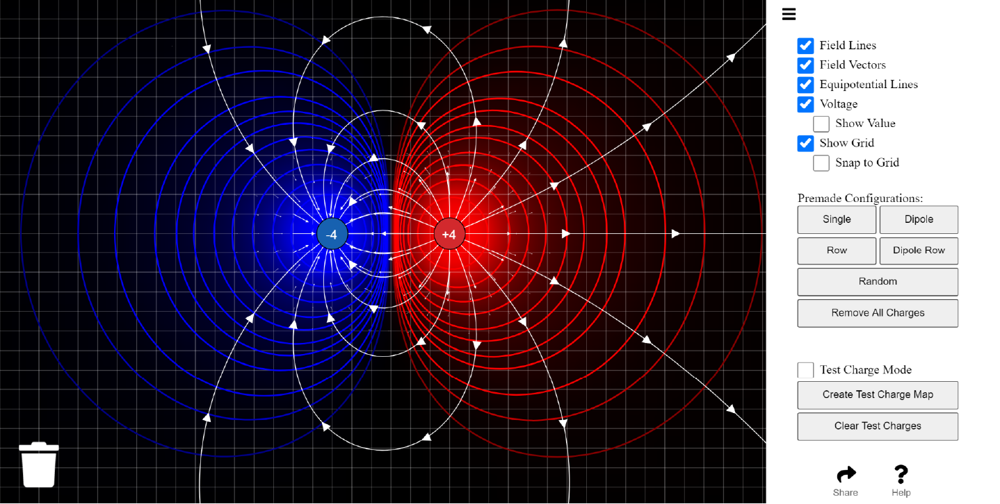
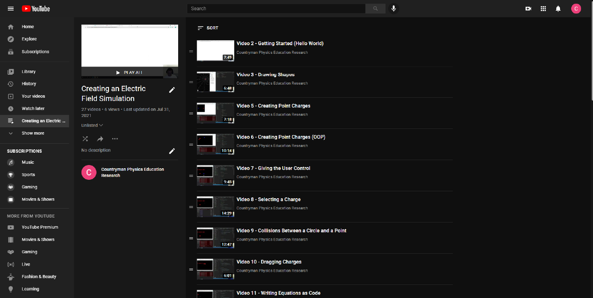
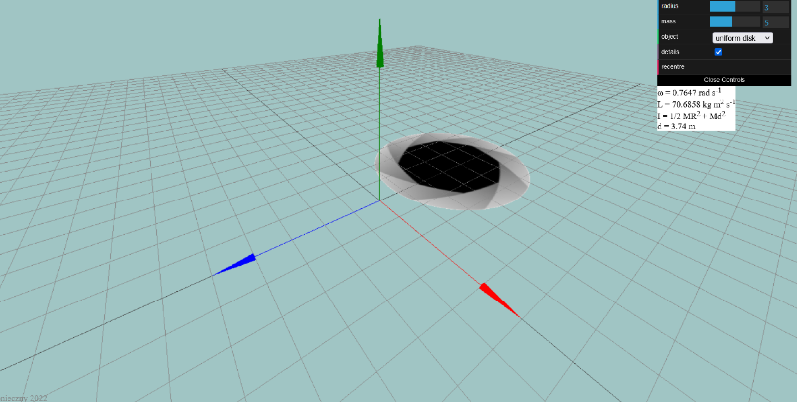
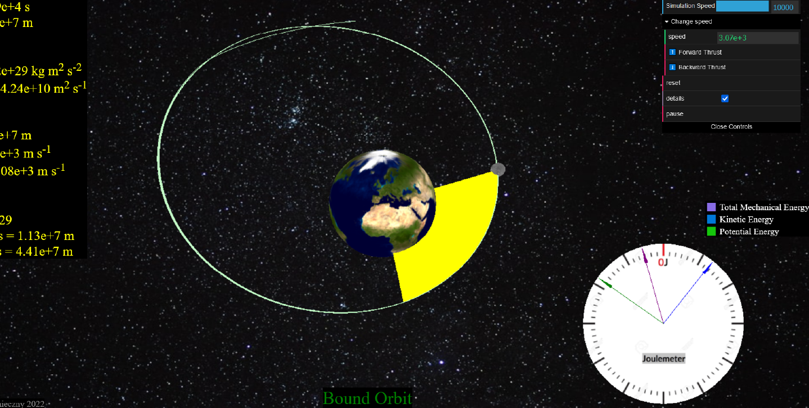

Simulations & Resources
Although the simulation and game are built in JavaScript and should run on most devices, Chrome is the preferred browser for running them.
Our group of undergraduate researchers, led by Colleen Countryman, welcomes any feedback you have about our simulations and games via our Feedback Report. Thank you for sharing your insights!
|  |
| Electric Field Simulation |
|
Deepen your grasp of electric fields with our immersive simulation. In the simulation you will explore dynamic representations of electric field lines, field vectors, equipotential lines, and voltage. You can also create custom charge distributions and observe real-time field visualization. Lastly, you can place test charges anywhere on the screen and observe their interaction with the electric field. |
| Go to Simulation |

|
| Electric Field Game |
|
Embark on an electrifying adventure with our game that challenges you to guide a test charge through a racetrack using electric fields that you create. To beat each level, strategically place charges on the screen then press "Play" to test your design. As you place charges, you will see dynamic electric field lines forming. After beating a level, you can come back and try again for a better score. Students can compete against eachother to rank up in a leaderboard while teachers can monitor their individual progess. |
| Go to Game |
|  |
| YouTube Series |
|
Learn to build the electric field simulation seen above from scratch with this video series. The videos use JavaScript and the p5.js library with some minor HTML and CSS. These videos are designed for curious individuals with a basic programming background and a general understanding of electric fields. Follow along the step-by-step guidance to enhance your programming skills and deepen your knowledge of electric fields. If you find these videos helpful, please share with us any new that you create so we can celebrate your achievements! |
| Go to YouTube |
|  |
| Angular Momentum Conservation |
|
Deepen your understanding of the conservation of angular momentum with this simulation. In the simulation, you gain control over the moment of inertia by adjusting parameters such as shape, radius, mass, and distance to the axis of rotation.You can then observe how changes in these variables influence the resulting angular velocity. |
| Go to Simulation |
|  |
| Orbital Manoeuvres |
|
Embark on a captivating journey through orbital mechanics with our interactive simulation. Develop a more intuitive understanding of key concepts like conservation of total mechanical energy and angular momentum. In the simulation, you take control of satellite maneuvers by applying thrust, dynamically altering orbit parameters such as eccentricity, period, and the satellite's mean distance to Earth. |
| Go to Simulation |
| Non-Inertial Reference Frame Simulation |
|
Explore the dynamics of different reference frames with our this simulation. With three levels showcasing diverse physical situations, students can observe objects in both inertial and non-inertial reference frames using a split-screen view. Students can then modify the initial conditions of the ball and the reference reference frame that they are viewed from as they compare real-time trajectories side by side. |
| Go to Simulation |